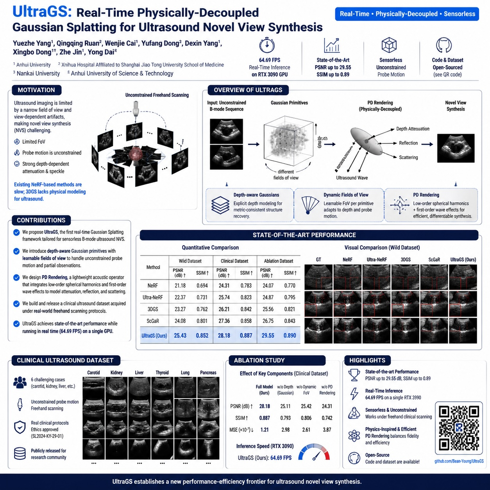
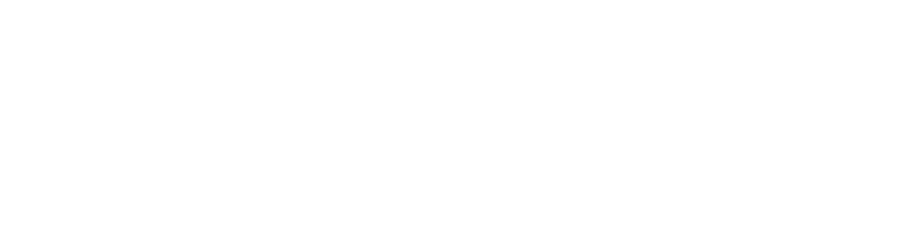
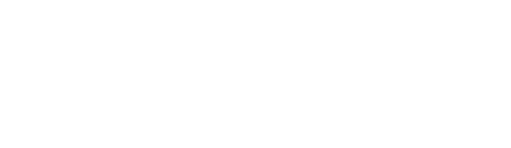
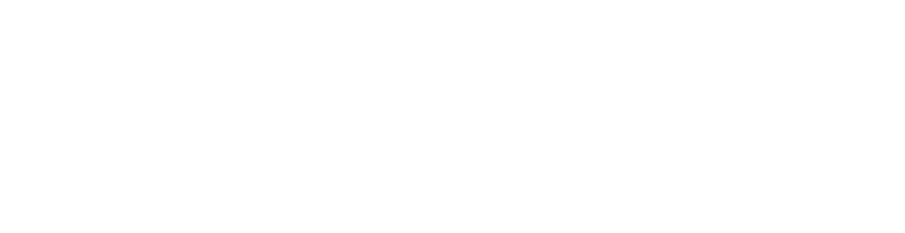
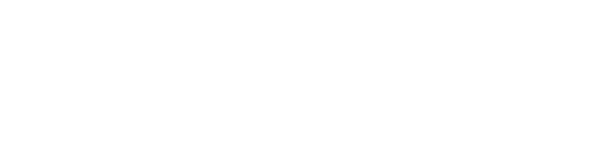
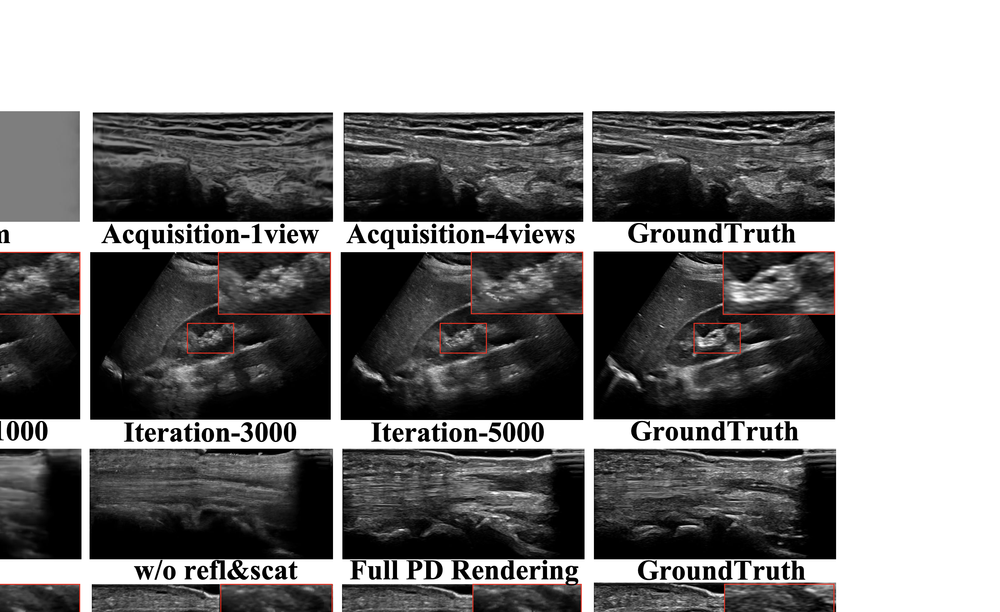

Ultrasound imaging is a cornerstone of non-invasive clinical diagnostics, yet its limited field of view poses challenges for novel view synthesis. We present UltraGS, a real-time framework that adapts Gaussian Splatting to sensorless ultrasound imaging by integrating explicit radiance fields with lightweight, physics-inspired acoustic modeling. UltraGS employs depth-aware Gaussian primitives with learnable fields of view to improve geometric consistency under unconstrained probe motion, and introduces PD Rendering, a differentiable acoustic operator that combines low-order spherical harmonics with first-order wave effects for efficient intensity synthesis. We further present a clinical ultrasound dataset acquired under real-world scanning protocols. Extensive evaluations across three datasets demonstrate that UltraGS establishes a new performance-efficiency frontier, achieving state-of-the-art results in PSNR (up to 29.55) and SSIM (up to 0.89) while achieving real-time synthesis at 64.69 fps on a single GPU. The code and dataset are open-sourced at: https://github.com/Bean-Young/UltraGS.

Overview of UltraGS for sensorless ultrasound novel view synthesis.

Pipeline of UltraGS with dynamic aperture rectification and PD Rendering.

Comparison of Gaussian primitive representations for ultrasound scenes.
| Method | Wild Dataset | Phantom Dataset | Speed (fps) | ||||
|---|---|---|---|---|---|---|---|
| PSNR | SSIM | MSE | PSNR | SSIM | MSE | ||
| NeRF | 20.176 | 0.6834 | 0.0066 | 20.359 | 0.6301 | 0.0058 | 0.28 |
| TensoRF | 24.058 | 0.7528 | 0.0051 | 27.260 | 0.7178 | 0.0029 | 1.61 |
| Ultra-NeRF | 19.140 | 0.6218 | 0.0109 | 25.115 | 0.6814 | 0.0042 | 0.43 |
| 3DGS | 22.327 | 0.7745 | 0.0057 | 27.115 | 0.7142 | 0.0031 | 52.56 |
| SuGaR | 21.392 | 0.6291 | 0.0159 | 28.899 | 0.8843 | 0.0024 | 9.81 |
| Ours | 25.454 | 0.7969 | 0.0043 | 29.550 | 0.8966 | 0.0020 | 64.69 |
Quantitative comparison on Wild Dataset and Phantom Dataset.

Visual reconstruction comparison on Wild and Clinical Dataset.

Comparison of kidney visualization results from Clinical Dataset.

Visual reconstruction comparison on ablation study.
@inproceedings{yang2026ultrags,
title={UltraGS: Real-Time Physically-Decoupled Gaussian Splatting for Ultrasound Novel View Synthesis},
author={Yang, Yuezhe and Ruan, Qingqing and Cai, Wenjie and Dong, Yufang and Yang, Dexin and Dong, Xingbo and Jin, Zhe and Dai, Yong},
booktitle={2026 IEEE International Conference on Multimedia and Expo (ICME)},
year={2026}
}